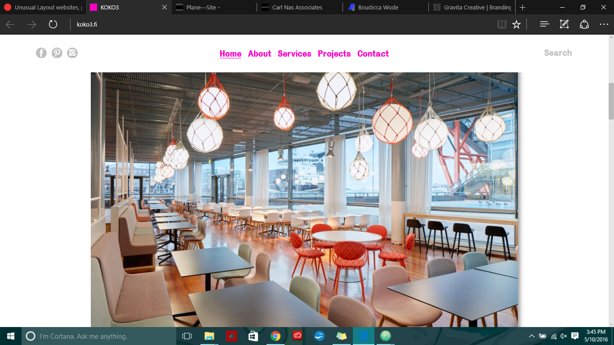

Design work is good. You get Koko.
Home This site is dedicated to interior designers. But, speaking for the website's design, it is clean-cut. Clean-cut meaning: it is sleek, gets straight to the point, no distractions from its advertising purpose. I found the part where the images turn pink when hovered over to be cute; it gives a bright, hospitable flair.
Koko3 Link